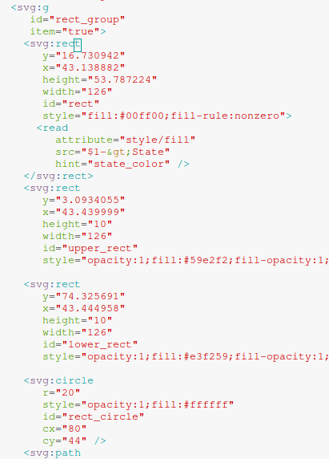
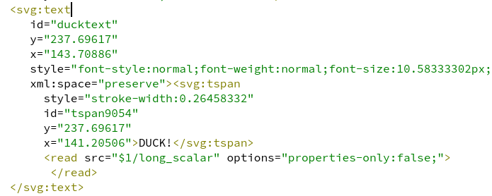
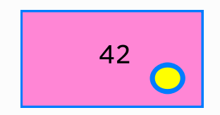

|
qumbia-svg
1.x
Qt SVG cumbia integration module
|
The qumbia-svg module connects Qt Svg objects to cumbia.
The Qt SVG C++ module provides functionality for handling SVG images. The cumbia engines and infrastructures can be used to change any SVG element. An svg node with the item attribute defined and not set to false is rendered in a dedicated QuGraphicsSvgItem, an extension of the Qt QGraphicsSvgItem. QuGraphicsSvgItem represents the "*item*" node and its children on a QGraphicsScene. The QGraphicsScene class provides a surface for managing a large number of 2D graphical items.
SVG documents are loaded from files or directly from strings by the loadFile and loadSvg functions respectively.
Svg content is displayed by QuSvgView, whose constructor takes an instance of QumbiaSvg. QuSvgView is a QGraphicsView that will display one QGraphicsSvgItem for each element in the svg document with the item attribute defined and not set to "false".
QuSvg (main class), QuDom (DOM representation), QuDomElement (QDomElement wrapper with improved search and access functionality), QuGraphicsSvgItem (extends QGraphicsSvgItem), QuSvgView (QGraphicsView extension that creates items, manages zoom operations, signals click and context menu events).
Items, that map the nodes defined in the svg DOM document, can be accessed in a very simple fashion by means of their id within the square brackets operator defined in the QuDom and QuDomElement classes. Slash ('/') separate ids can be specified to traverse the DOM more efficiently through a hierarchical path.
Each property of a svg object can be connected to a cumbia source. The connection can be directly defined in the svg file, by introducing a *<read>* element as direct child of the target element. The *<read>* element will contain the following attributes
| rect elements changing their colors according to a Tango state | svg code to declare an item with a reader |
|---|---|

|
attribute can be omitted if it is clear from the context what is the target of the data update in the parent. For example, the parent is a *<text>* node.
In the svg source snippet below
| source connected to a text node | text label |
|---|---|

|

|
it is easy for cumbia-svg to understand that the value of long_scalar will update the text node child of <svg:text> with id ducktext.
In a similar way, under the *<read>* node, the hint=state_color linked to the style/fill target attribute in Fig. 1 will update the fill color of the parent *<rect>*.
Please see also QuSvgReadLink::isValid
Source names must be conform to the syntax understood by the available engines, e.g. Tango, EPICS, random
When possible, the value of the source is directly updated: a number displayed on a text label or the color of a state. In the other cases (an item position change after a change in a value or a circle radius change proportional to another quantity) custom mappings and transformations can be defined.
Target names must be conform to the syntax understood by the available engines, e.g. Tango, EPICS, random. Writings without arguments, like those triggered by a push button, can be done through a clickable item. Those involving input values are performed by dedicated dialogs, either executed from a contextual menu or a simple click. Items with a target attribute defined and the clickable attribute set to true will start a write operation after a left button click event. Items with a target attribute defined and without a clickable attribute will make a write operation available through a contextual menu. In the latter case, if an action string attribute is defined, its value will be set as text in the contextual menu action associated. The type attribute defines the type of desired writer used in the pop up dialog. Its value can be one of (case insensitive):
If an item has the clickable attribute set to true, it will be highlighted when mouse enters the item as well as a click operation is performed. QuSvgView itemContextMenuRequest and itemClicked signals are emitted according to the event detected.
The following scenarios are valid:
1.8.15